Hub Phone Setup
- General Device Introduction
- Data transfer protocol for patients
- Data transfer protocol for professionals
- As a professional: do I need to do anything on a daily basis or all N days (for each patient using a specific device / app)?
- As a professional: do I need to do anything after each individual period of device / app use ended (for each patient using a specific device / app)?
- As a professional: do I need to do anything after the full periods of use of a specific device / app ends (for each patient using a specific device / app)?
- Original device setup and pairing
- If handling a device and it arrives new: what needs doing before it gets sent to a study centre?
- First Time Use
- Operating System Update
- Adding Mobile Phone SIM (only for certain study sites)
- Remove preinstalled apps
- Update Existing Apps
- Remove Samsung Daily
- Remove Home Screen
- Disable Google Assistant
- Install Sensing Applications
- Install Miscellaneous Applications
- Disable Sound
- Configuring Hotspot
- Enabling Hotspot
- Organise Quick Panel
- Disabling HomeScreen Shortcuts
- Label Samsung Device
- Reusing Smartphone Across Participants
- Put into inventory management?
- Needs firmware update?
- Pairing with a companion application?
- Any account setup required?
- Needs pairing with hub device?
- Any assembly required?
- Package together with which other devices for which study centre?
- If handling an application: what needs doing before a study centre can use the app?
- If handling a device and it arrives new: what needs doing before it gets sent to a study centre?
- Device pre-setup and configuration
- Device How To / setup for wear
- Troubleshooting/FAQ
- Device return
- Returned device processing and cleaning / an application use period for a participant has ended
- Device recycling and provisioning
General Device Introduction
You will be provided with a Samsung Galaxy A40 smartphone for the duration of this study. Its purpose is to connect and transfer data between the sensing devices that you wear and the smartphone where they have an associated mobile application. The smartphone will have 7 applications preinstalled and configured for use with the associated sensing devices or during the study, including: VitalPatch, Biovotion, ZK1 YOLI, Dreem, VTT Stress Monitor, CamCog ThinkFast, and IDEA-FAST Support Documentation.
The VTT Stress Monitor App and CamCog record data about phone usage or send prompts to complete short questionnaires daily. Because these applications will send notifications at pre-defined times and are intended to also record patterns of how you use your personal mobile device, it is recommended that they are not used on the Samsung Hub device. Instead, they should be installed on the participants personal mobile smartphone, and if the participant does not have a mobile smartphone or does not consent for these applications to be installed on their personal device, then they should be used on the Samsung device.
How does this device look?
| Samsung A40 Android SmartPhone | Samsung A40 box and charger |
| 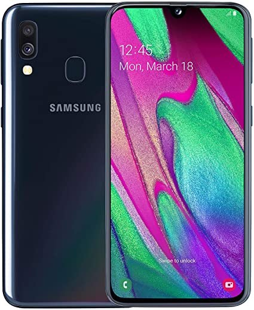 | 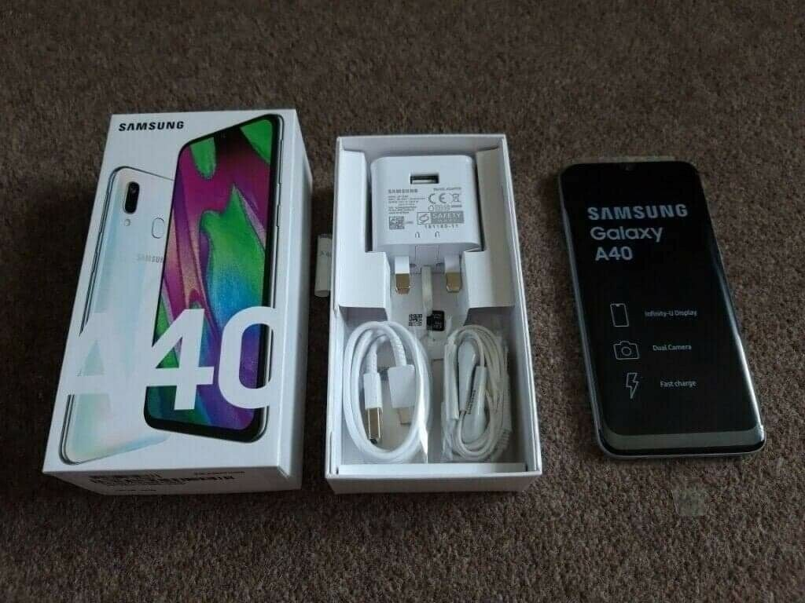 |
How is it used?
The Samsung A40 smartphone will automatically connect to the preconfigured sensing devices if they are within range (typically a few meters) and transfer data from each using the preinstalled mobile phone applications. Note that not all devices will be connected to the study phones. The information materials for each device contains further details. Once you have an internet connection, some of the sensing device applications will upload the data from the Samsung device to the cloud where researchers of the study can view it. It is important that you carry the Samsung device within two meters of you while wearing any sensing devices and that it is charged each night to ensure it can transfer data.
Depending on your individual study participation pattern, the phone will either connect to the internet through your local WiFi, or it will come equipped with a 4G prepaid card. Please note that if the phone connects to the internet using a 4G prepaid card, we must ask participants not to use the phone for any unnecessary and data-intense online activities, such as watching videos online.
Data transfer protocol for patients
As a patient: do I need to do anything on a daily basis or all N days?
When wearing either the VitalPatch or Biovotion (also known as Everion) you should check the smartphone twice per day – in the morning and before bed – to ensure the associated mobile applications are connected and have transferred data from daily wear of each device.
When you are using either or both the VitalPatch and Biovotion devices, their associated mobile applications will send a persistent notification to the Samsung device (Figure 1-2 below), which indicates the devices connection, battery status, and if data has been uploaded to the cloud.
| Figure 1: VitalPatch | Figure 2: Biovotion |
 |
 |
As a patient: do I need to do anything after each individual period of device / app use ended?
Yes. You must continue carrying the Samsung smartphone as it will transfer data from different devices across the duration of the study, such as VitalPatch or Biovotion.
As a patient: do I need to do anything after my full periods of use of a specific device / app ends?
No. Data will be automatically uploaded from the Samsung device to the cloud. After your full period of use ends in the trial, you must meet your clinician. They will take the Samsung device and retrieve any data remaining that has not been uploaded from it. The device will then be cleaned and prepared to be used by another study participant. Some study centres will arrange with you to return the devices via mail. If so, please follow any additional instructions provided by the study centre and make sure to power off the study phone before sending it off.
Data transfer protocol for professionals
As a professional: do I need to do anything on a daily basis or all N days (for each patient using a specific device / app)?
Not Applicable.
As a professional: do I need to do anything after each individual period of device / app use ended (for each patient using a specific device / app)?
Not Applicable.
As a professional: do I need to do anything after the full periods of use of a specific device / app ends (for each patient using a specific device / app)?
Yes. You must arrange a visit with each patient at the end of the study to collect all sensing devices, including the Samsung smartphone. When the patient brings the device, you must ensure that it is fully charged and that all data from mobile applications associated with sensing devices – VitalPatch and Biovotion – is transferred from the smartphone to the cloud. After data has been transferred and the device is fully charged, if you feel that the device is dirty you can clean it with wet wipes.
Original device setup and pairing
If handling a device and it arrives new: what needs doing before it gets sent to a study centre?
The following activities must be undertaken before a participant receives a device. These are presented as a checklist to help guide the process.
- Unbox the device, charge it, and set it up for first time use
- Add a local Wi-Fi and update the Operating System to the latest version (verify successful update to Android 10).
- Set up phone to use the following PIN for locking / unlocking: 1034
- Insert a mobile SIM card, if provided
- Install mobile applications:
- Sensing apps: VitalPatch, Biovotion, Dreem, VTT Stress Monitor and CamCog ThinkFast, ZK1 YOLI.
- Misc apps: IDEA-FAST support documentation and TeamViewer for remote access.
- Organise the Home Screen and panels to only show the IDEA FAST applications.
- Label each Samsung Device and register the device in the inventory manager.
First Time Use
When you first receive the Samsung A40 unbox it and turn it on. If a device has low battery, please charge it before proceeding. Turn it on by pressing the single button on the right side of the device. The first screen will ask to agree to the terms and conditions. Tap “End User Licence Agreement” and tap “Next”. Do not select the other three optional options.
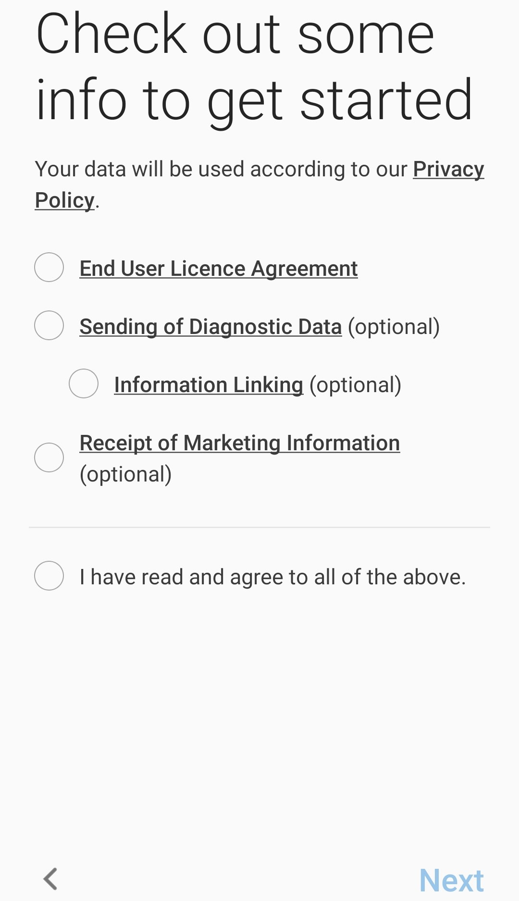
Figure 1: only choose the “End user Licence Agreement” option
You will then be asked to if you want to transfer data from another device prior to installing. Tap “Skip this for now” and “Next”.
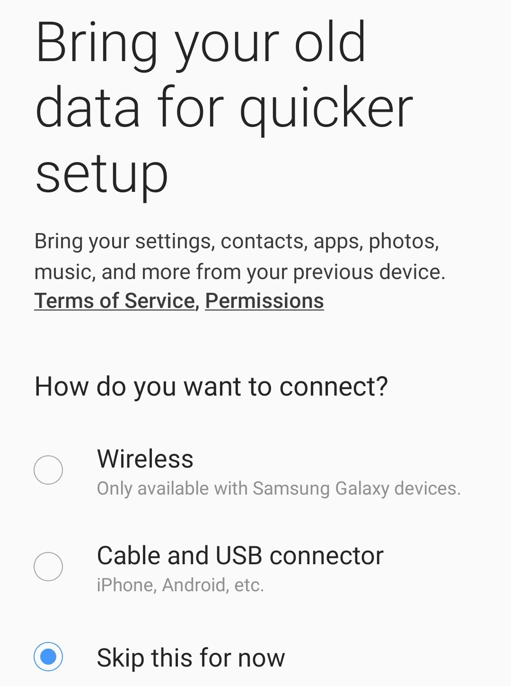
Figure 2: do not transfer any data from other devices
Next, you will be asked to choose a Wi-Fi. It is very important that you connect to a local Wi-Fi during the installation process. Tap whichever Wi-Fi you want to connect to and enter the associated password (Figure 3). After that, “connected” will appear to indicate your successful connection (Figure 4). Tap “Next” to move onto the next stage.
| 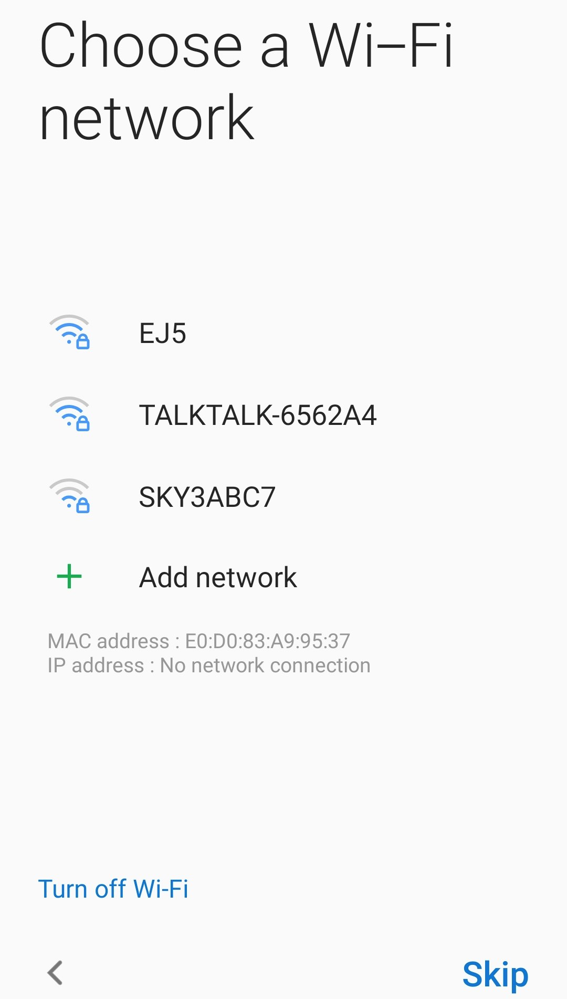 | 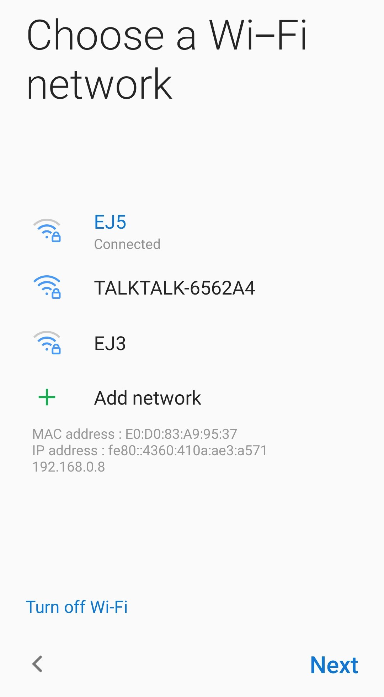 |
| Figure 3: choose a Wi-Fi network | Figure 4: Wi-Fi network connected. |
The following screen will show a loading screen as the phone will begin downloading updates from the internet because you have connected to Wi-Fi. Once this is done, you will be prompted to log into a Google Account (Figure 5).
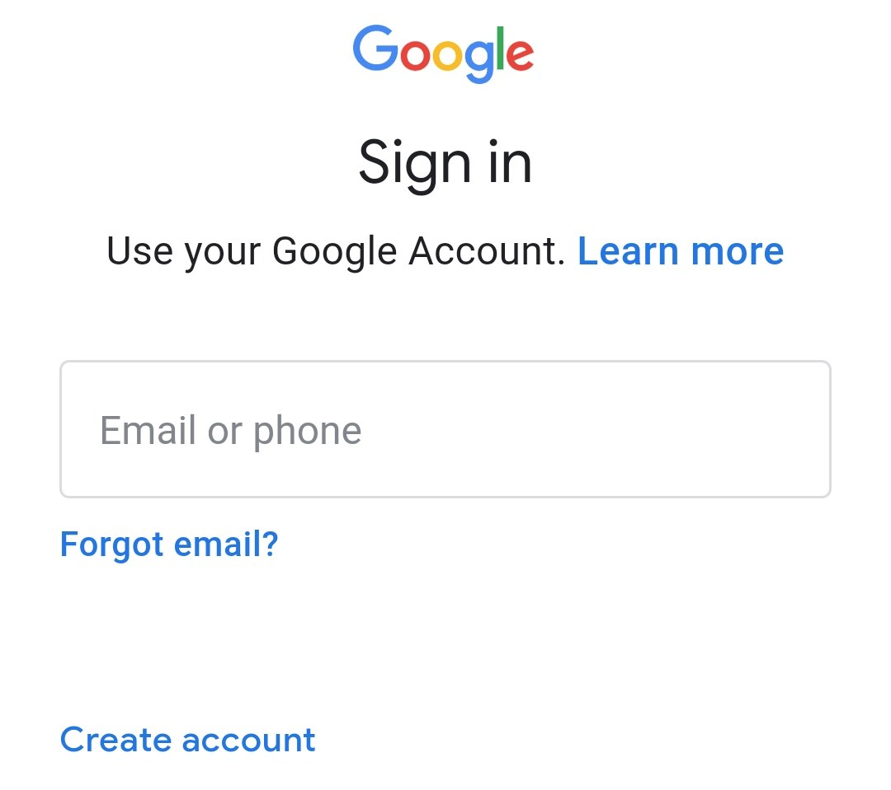
Figure 5: sign in with a Google account.
Each Samsung smartphone has an associated device_id and a pre-created gmail and password. To access these, please open a ticket on the IDEA-FAST support platform: http://support.ideafast.eu/
Note: if this is the first time a device has been setup, then the ‘Create account’ option should be chosen. The gmail to enter should be “ideafast-DEVICE_ID” where DEVICE_ID is the device’s unique ID that was pre-created by the IDEAFAST project. Enter dummy details for the fullname, gender and date of birth. For the password, generate a 16-length string using https://passwordsgenerator.net/ with ‘symbols’ excluded. Add both the Device ID and password to the secure password vault using key pass as outlined in the hub computer setup.
After successful authentication you will be asked to agree to Google’s terms and services. Tap “I agree” and you will be taken to a new screen where “Getting Account Info” is underway.
You will then be asked to select backups if they exist. Tap “Next”.
The next screen is “Date & time” and should be automatically populated. Tap “Next”.
The next screen will ask you if you want to create a PIN. Enter “1034” once, then again for confirmation, and the PIN will be created.
| 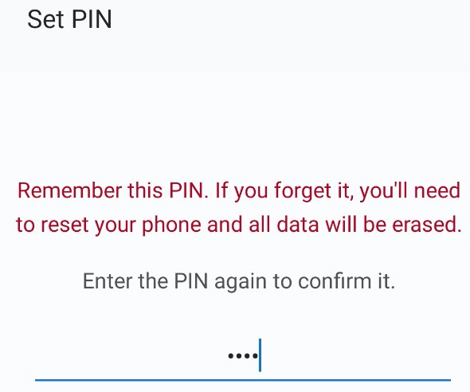 |
| Figure 6: set the PIN to 1034 and enter it twice for confirmation. |
The next screen will ask you to “Turn on” Google Assistant. Tap “No thanks” as this feature should not be enabled:
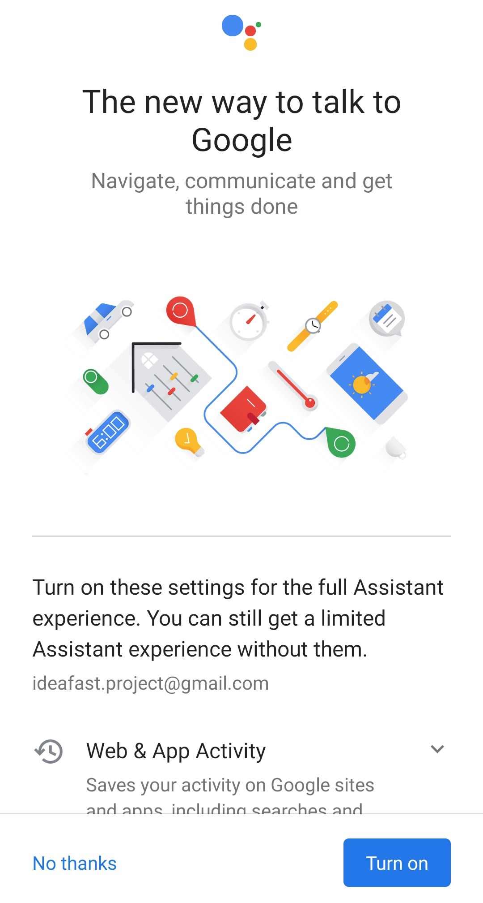
Figure 7: do not enable Google Voice and Assistant. Tap “No Thanks”.
Next you will be prompted to select ‘Google Services’, which are enabled (blue) by default. Please disable all services, which will turn them from blue to grey. Once all services are disabled, tap “Accept”.
| 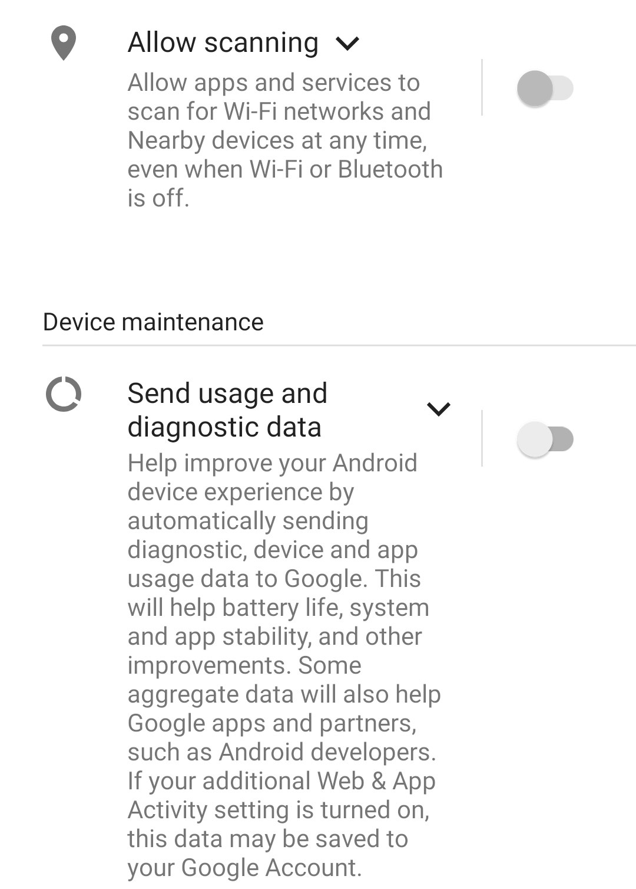 |
| Figure 8: disable all services offered by Google. |
The next screen will show a loading bar and “adding the finishing touches…” to the mobile:
| 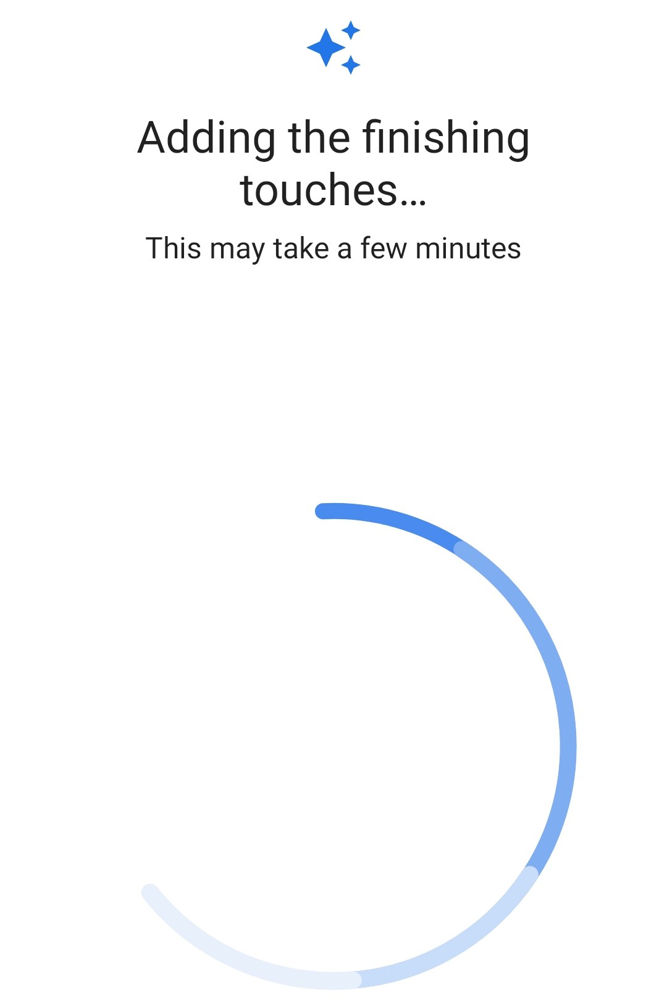 |
| Figure 9: loading screen to update your previous choices. |
You will then be prompted to “Sign in to your Samsung account”. Tap “Skip”. You may then be asked “Skip out of all this?” to confirm you want to skip. Tap “Skip” again. The next screen will read “All done!” and show the “Finish” button. Note: this is not the final screen!
| 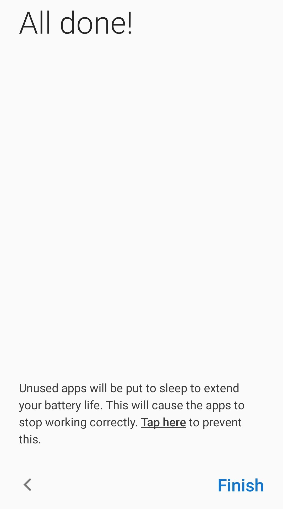 |
| Figure 10: installation complete. |
Tap the “Tap here” text as the sleep to extend you battery life’ feature must be disabled. This will take you to a new screen: tap the button from blue to grey, which will turn this feature off (Figure N). Tap the back button in the top-left area of the screen (“<”) to go back to the previous page.
| 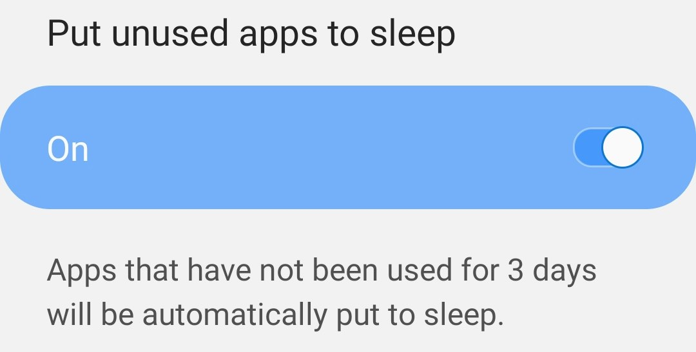 | 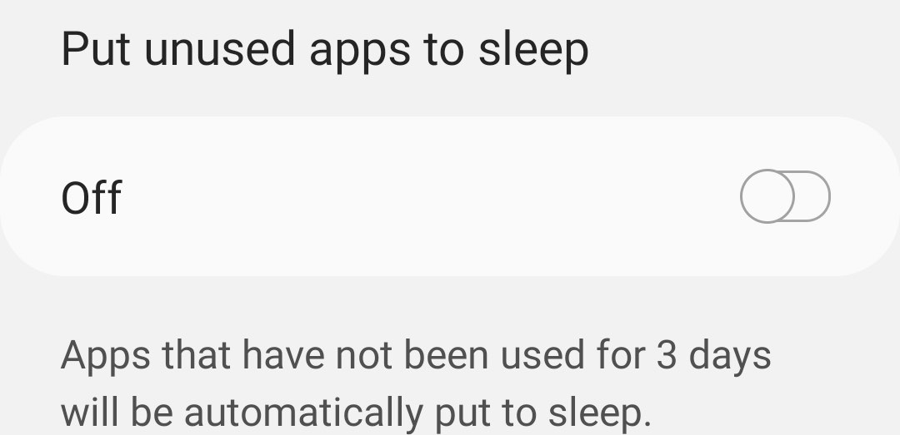 |
| Figure 11: battery extended feature is enabled by default. Please disable it. | Figure 12: once disabled, the button and background turn from blue to grey. |
Finally, you will be asked to “Discover your new favourite app”. Tap “No Thanks” to skip this. The default home screen will then be displayed and look like this:
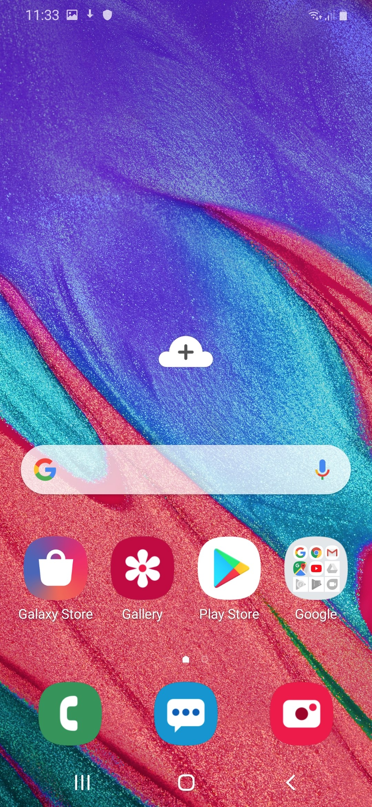
Well done, the installation of Android is complete.
Operating System Update
The provided devices will be updated to the latest Operating System (OS) version: Android 10. However, after initially unboxing and setting the device up, please check if any additional updates are available, then download and install them if there are. Samsung provide a 1-minute video tutorial of this process, and we have provided a step-by-step guide of the process below:
| 1. Before starting the update process, please assure the phone is charged > 50 % and connected to a charger.Swipe down from the top of the screen to vie the options. Tap the Cog in the top right-hand corner of the screen. | 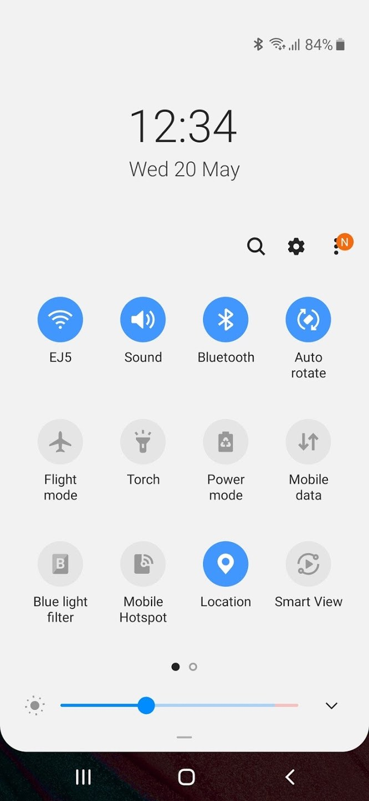 |
| 2. Scroll down until you see “Software update” and tap it. You may see | 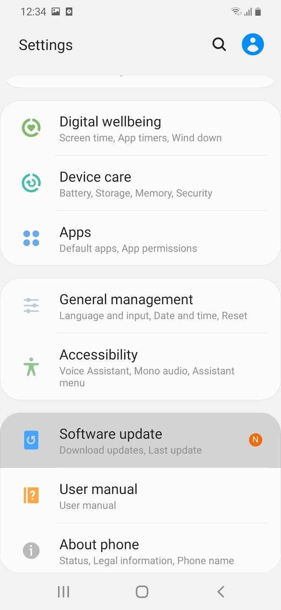 |
| 3. Tap “Download and Install”. The phone will check for any updates. | 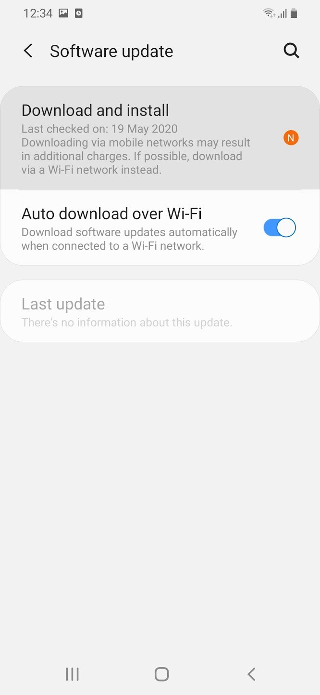 |
| 4. A new screen will appear if there are any updates available. Tap “Download” to begin the process. | 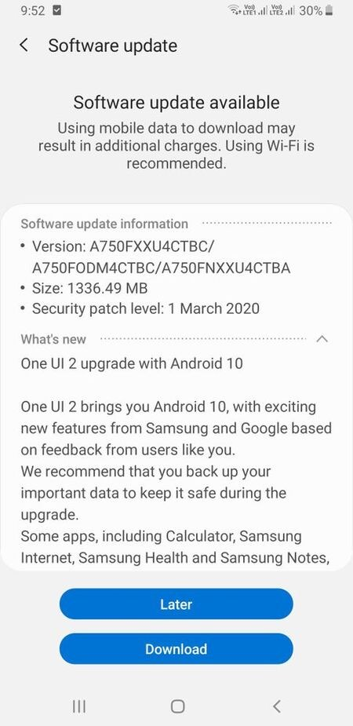 |
| 5. Once downloaded tap a new screen will appear to install the software update. Type “Install Now”. Depending on the size of the download, this may take some time. | 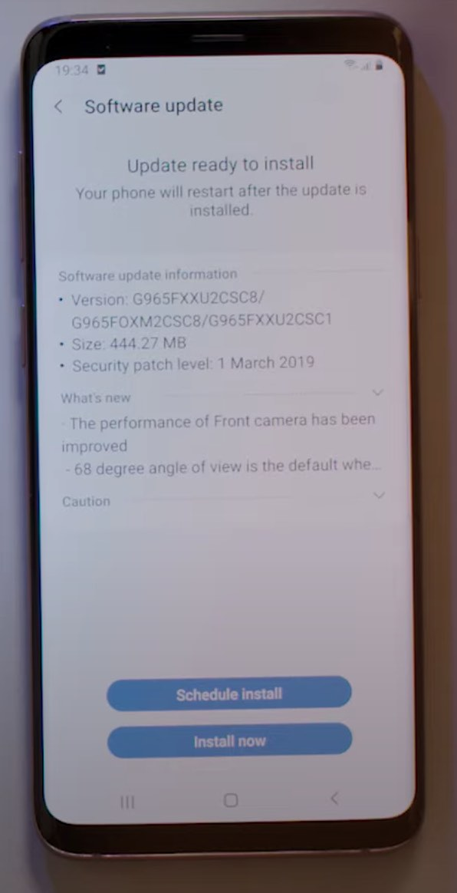 |
- Note: _You may need to follow these steps multiple times to update to the latest version. As of June 01 2020 the latest available operating system version for the study phones is Android 10.
Adding Mobile Phone SIM (only for certain study sites)
| The Mobile Phone SIM is stored inside a small slot inside the top left of the mobile phone. There is a metal sim card removal tool inside the Samsung A40 box. Push the end of this tool into the small, circle opening, and the SIM slot will pop out as illustrated to the right. Note: this is required for ‘WiFi Hotspot’ below |
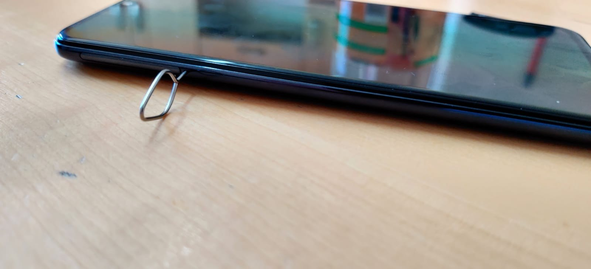 Tool being used to remove SIM card slot |
Remove preinstalled apps
Several applications come preinstalled on the Samsung A40 that are send notifications or track data in the background, which drains battery and may confuse the participant when using the smartphone. As such, please uninstall or disable all applications as follows:
| 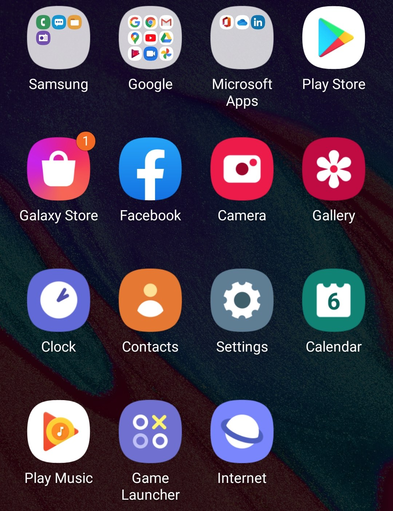 |  |
| Figure 1: several applications are installed by default, such as Facebook and Spotify. | Figure 2: uninstall/disable all applications besides those listed in the screenshot above. |
Some applications can be uninstalled from the smartphone, such as `Play Music`. Press and hold the application you want to uninstall, and a dialog will appear above the application (Figure 3). Tap “Uninstall” and the application will be uninstalled. Some applications, such as Facebook, cannot be entirely uninstalled and should be “Disabled” instead. Follow the same process for uninstalling and tap “Disable” to permanently turn the application off.
| 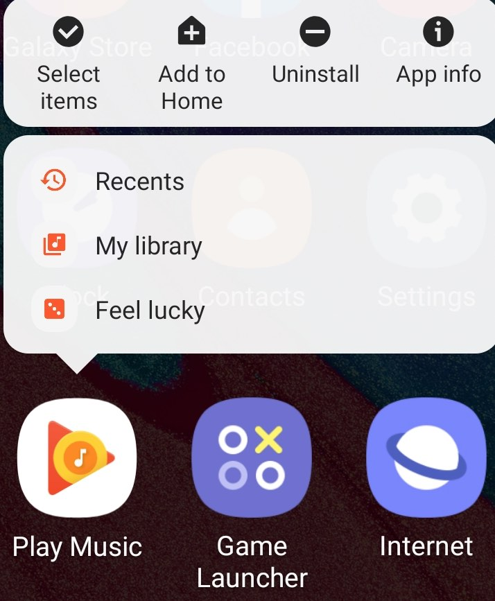 | 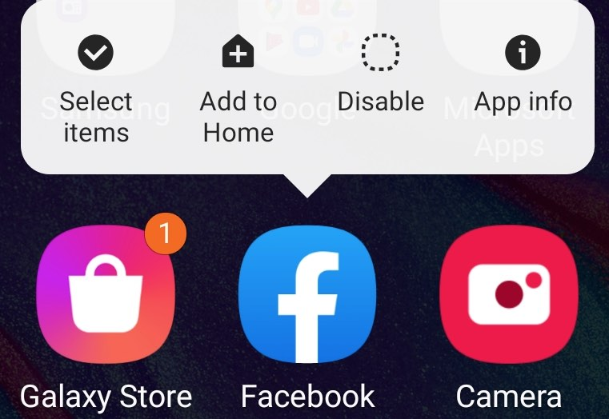 |
| Figure 3: press and hold an app to view the uninstall option. | Figure 4: some applications cannot be uninstalled and should be disabled instead. |
The following applications should be uninstalled: Office Mobile, Spotify, Samsung Notes, Samsung Health, Samsung Members, Galaxy wearable, and SmartThings.
The following applications should eb disabled: LinkedIn, OneDrive, Facebook.
Update Existing Apps
Please update all applications before proceeding to install new applications. To do this, open “Google Play” and tap the menu on the left side of the screen and a list of options will appear. Tap “My apps & games” (Figure 1) and you will be taken to a screen where you can view all applications that need updated. Tap the “Update all” button and the applications will begin installing. If no updates are availiable, this option will not exist (Figure 2).
| 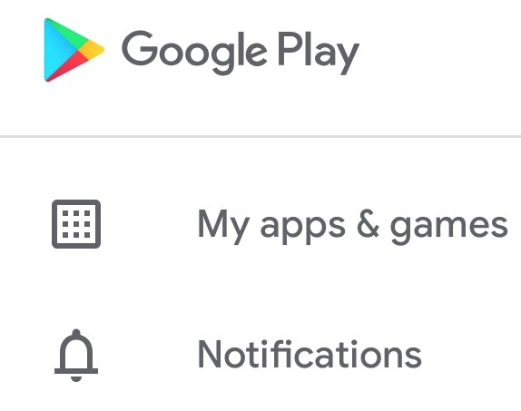 | 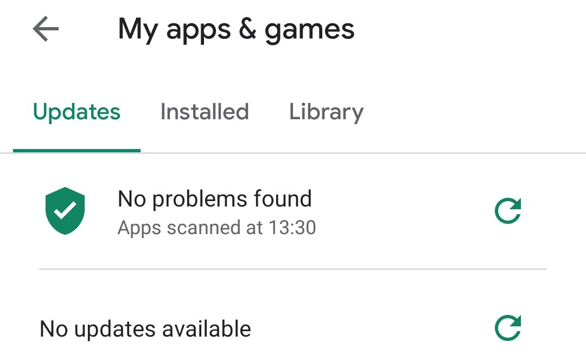 |
| Figure 1: Select “My apps & games” | Figure 2: if all applications are updated you will see “no updates available”. |
Remove Samsung Daily
By default, if you swipe left you will see “Samsung Daily”, which can present a range of widgets to the user. To disable this, press and hold a space on the unlocked home screen where no application shortcut exists, and a popup will appear (Figure 1). Swipe left and you will see a blue button next to Samsung Daily (Figure 2). Tap it and Samsung Daily will be disabled.
| 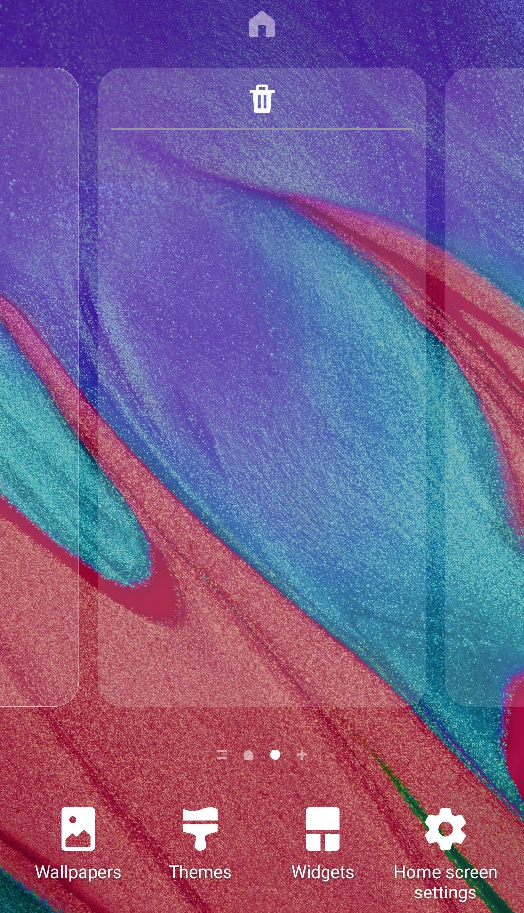 | 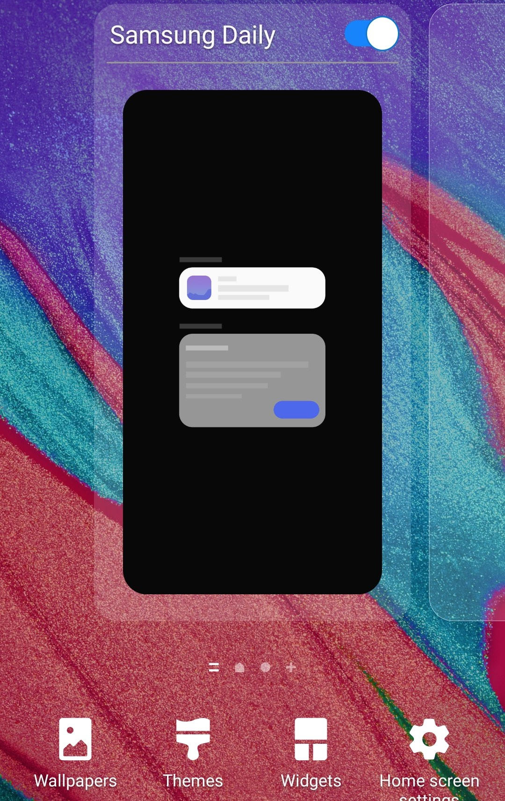 |
| Figure 1: tap the trash icon to delete a home screen. | Figure 2: Tap the blue button to turn it grey (disabled). |
Remove Home Screen
There are two home screens by default. Swipe up and you will see all home screens (Figure 1 above). Tap the trash can icon and that will delete one home screen. There should only be one home screen enabled.
Disable Google Assistant
Close any opened application and go to the home screen. Swipe up from the bottom left corner to open the application try and tap “Settings”. From there, tap the search icon and enter “Voice match” and tap the first result (Figure 1). You will be taken to a new screen where you will see that “Google Assistant” is enabled. Tap the associated button to disable it, which will turn it from blue to grey (Figure 2).
| 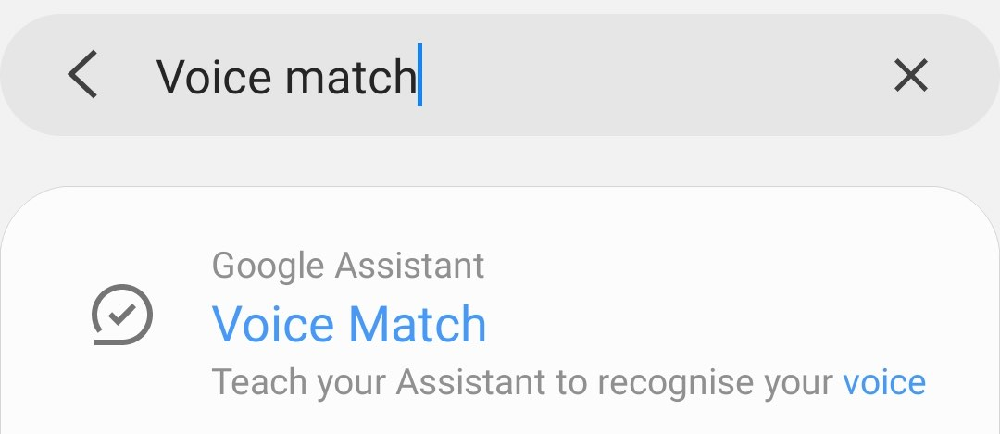 | 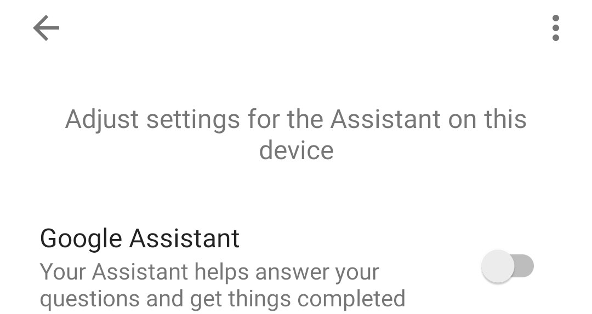 |
| Figure 1: Search for ‘Voice match’ on the Settings screen. | Figure 2: Google Assistant is enabled by default and appear in blue. Tap the icon and it will turn grey to indicate it is disabled. |
Install Sensing Applications
There are 8 applications to be installed in total: 6 sensing and 2 Miscellaneous.
Dreem
Dreem’s mobile application connects to a wireless headband that can record, store, and automatically analyse brain function such as sleep activity. To install Dreem, open the “Play Store” app and search for “Dreem” and tap the result as illustrated below (Figure 1).
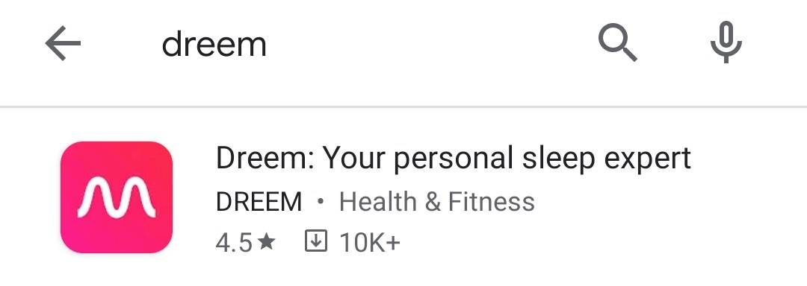
Figure 1: search for “dreem” on the Google Play store.
On the following screen tap “Install” and then “Open” once the application has successfully installed. You will then see two login options (Figure 2). Tap “I ALREADY HAVE AN ACCOUNT” and you will be taken to a different screen with three options (Figure 3). Tap “VIA EMAIL” log in using the Gmail associated with the phone and a separate password that you must find in the password vault.
| 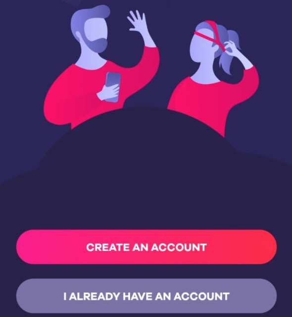 | 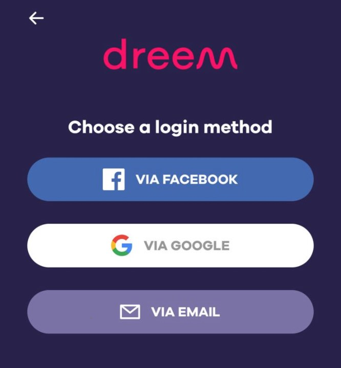 |
| Figure 2: An account has been pre-created for each provided smartphone. | Figure 3: Please log in using via email and not Google or Facebook. |
Once logged in you will be prompted to whitelist and allow the location service, which is used to help detect the headband. Tap “Allow only while using the app” and “OK” respectively (Figure 4).
| 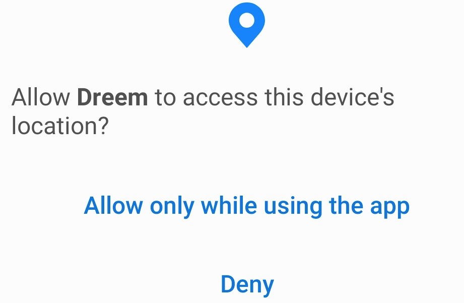 | 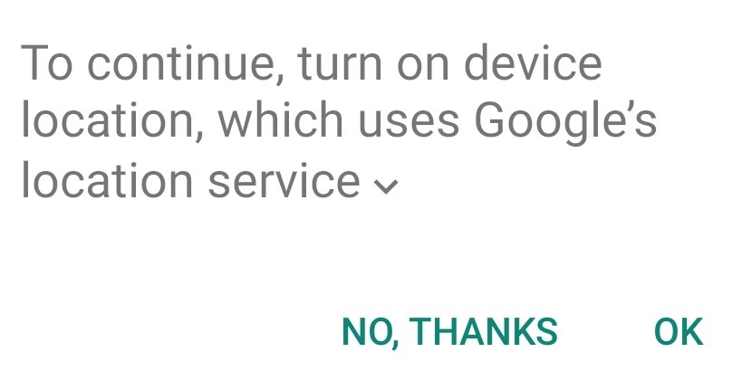 |
| Figure 4: Enable location when using Dreem |
Dreem is now successfully installed and ready to pair with a device.
Add App to Home Screen
Once installed, swipe from the bottom left corner to open the application tray. Long press the the “Dreem” application and tap “Add to Home”.
VTT Stress Monitor
Stress Monitor is a mobile application that runs in the background and records anonymised data about other mobile application usage, movement activity, and location and uses this data to determine different types of behaviour. To install it, open the “Google Play” app () and search for ”VTT Stress Monitor for IDEA-FAST” and tap the first result as below:
| Figure 1: click the app by Janne with the IDEAFAST logo | Figure 2: Tap “Install” to install the app. |
Note: If you cannot see the application when searching as above, open a browser and visit the following URL, which will take you to the application on the Play Store: https://ply.gl/fi.vtt.stressmonitorv4
Enabling Permissions
When you open the Stress Monitor application you will be asked to allow three types of permissions:
| 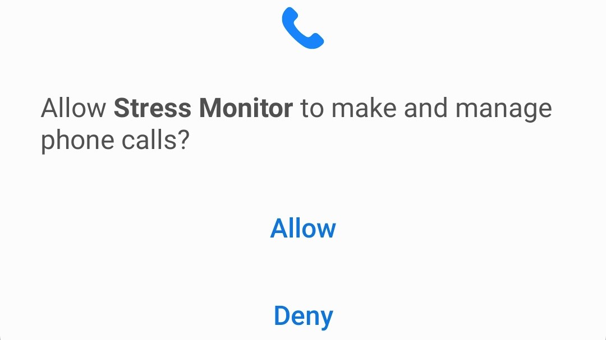 | 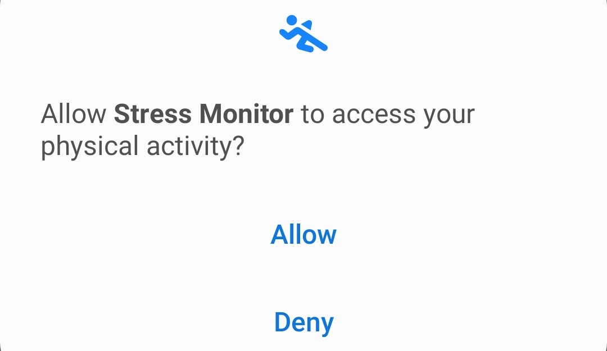 | 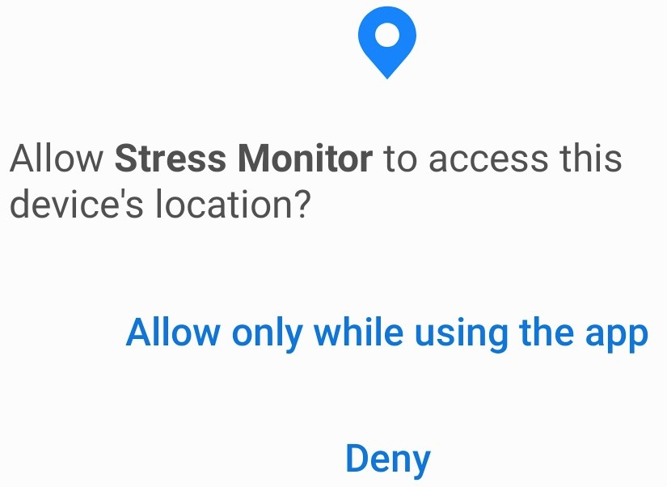 |
| Figure 3: Enable Phone Call, Activity Tracking and Location permissions |
The next step involved changing the power usage settings. You will next be asked to modify the battery optimizations setting (Figure 4). Tap “GO TO SETTINGS” and from there tap the search button (the magnifying glass) and enter “Stress”, which will appear with a blue box next to it (Figure 5). Tap the box to turn it grey and therefore disable battery optimising (Figure 6).
| 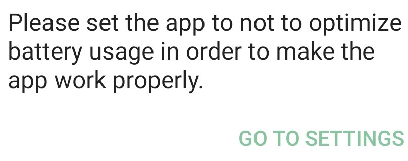 | 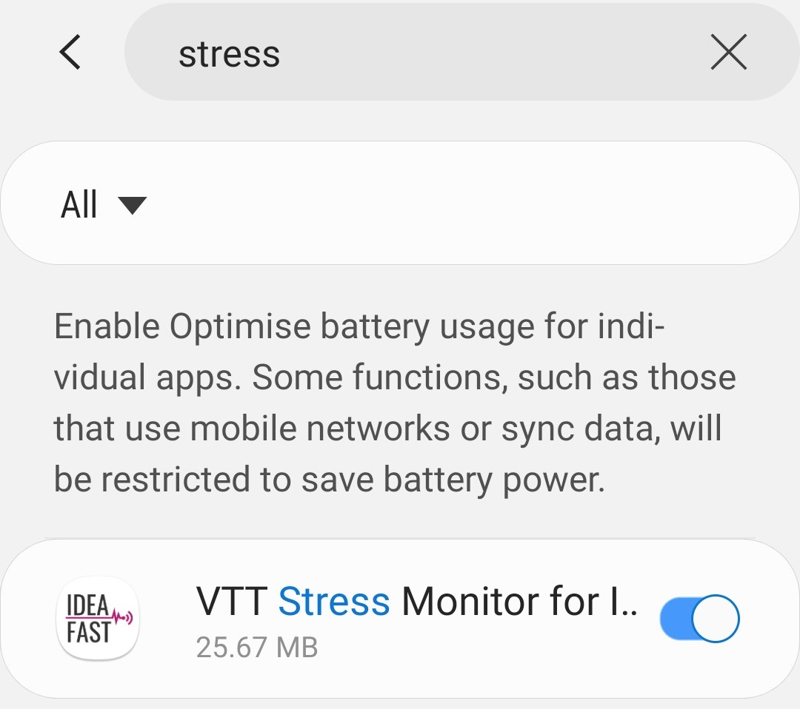 | 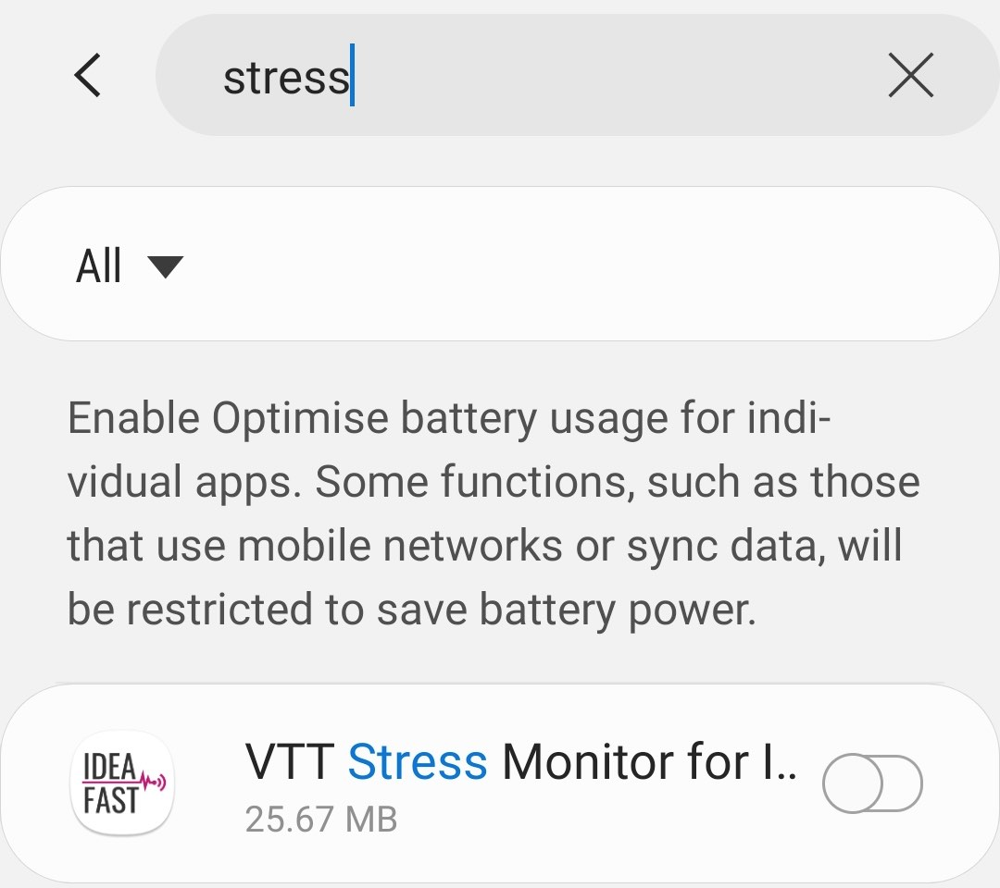 |
| Figure 4: permission dialog | Figure 5: battery optimisation is enabled by default | Figure 6: tap the button to disable it. |
After disabling batter optimisation, the Stress Monitor app will ask to enable “usage statistics” (Figure 7). Tap “GO TO SETTINGS” and similar to before search for “Stress Monitor” (Figure 5) and this time check the box to change it form grey to blue, e.g. enabling usage statistics (Figure 8).
| 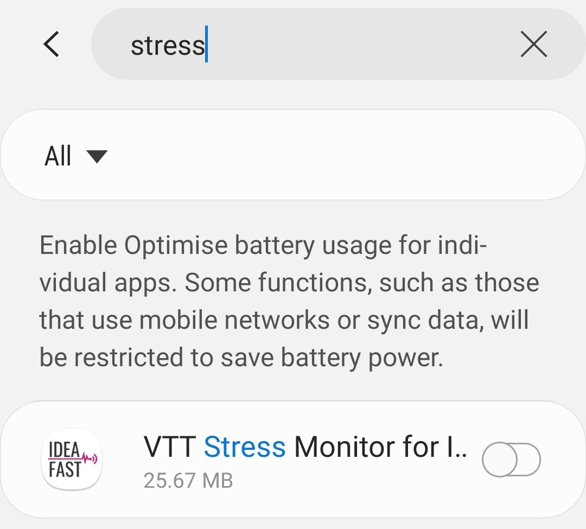 | 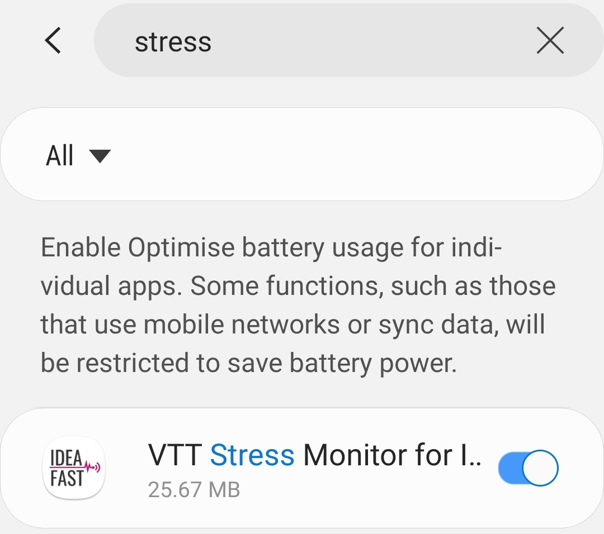 |
| Figure 7: usage statistics are disabled by default | Figure 8: tap the button to turn it blue and enabled. |
After permissions are enabled, you will see a login screen where you should not enter any credentials. The clinical staff member can enter these details if the participant choses to use the Samsung smartphone rather than their personal device, e.g. if they have an iPhone.
Add App to Home Screen
Once installed, swipe from the bottom left corner to open the application tray. Long press the “VTT Stress Monitor for IDEAFAST” application and tap “Add to Home”.
MedioBioSense Health (for VitalPatch)
The associated mobile application for VitalPatch, MBSHealth, is distributed as an APK, therefore you must change the settings to allow downloading and installing of APKs from unknown sources. Open “Internet” (not Chrome) and tap “agree” to agree to Samsung’s terms for using the browser. Tap “Not now” to set Samsung Internet as your default browser. Enter https://mbs.wp3.ideafast.eu/ in the address bar. This will redirect you to the APK file hosted on Google Drive. Click download if the file does not automatically download. Tap “Allow” when asked to provide Samsung Internet with permission to save the file on the phone (Figure 2).
| 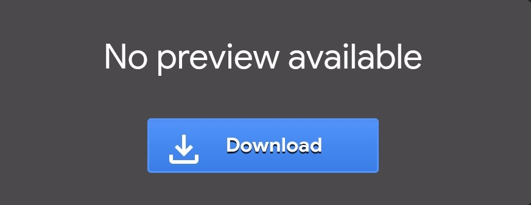 | 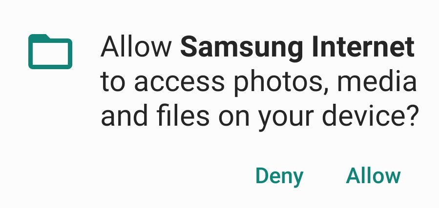 | 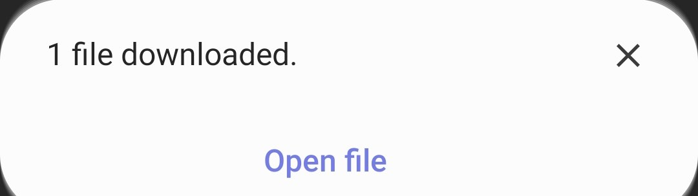 |
| Figure 1: Google Drive Download | Figure 2: Permission to install APK on smartphone | Figure 3: automatic dialog to open APK after download. |
Once downloaded, a dialog will automatically appear to open the file, tap “Open File” (Figure 3). If this disappears, to find the downloaded APK file, close the browser and swipe left to view all apps. In the “Samsung” folder tap “My Files”, which is the yellow icon.
| 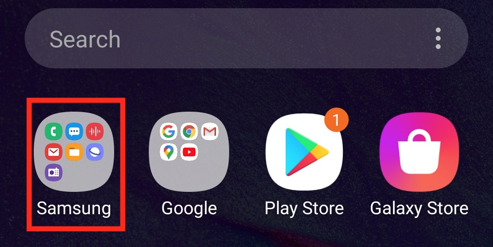 |
| Figure 4: Navigate to the Samsung Folder and tap the yellow icon app named “My Files”. |
From there, tap “Internal storage” and navigate to “Download” and you will see one file named “MBSHealthLocal…”. Tap the APK that you have downloaded, and a dialog will appear (Figure 5). Click “Settings” and “Allow from this source” by changing the icon from grey to blue (Figure 6), then tap the “<” to return to the installation process and tap “install” (Figure 7). The application will begin installing, and once complete tap “Open”.
| 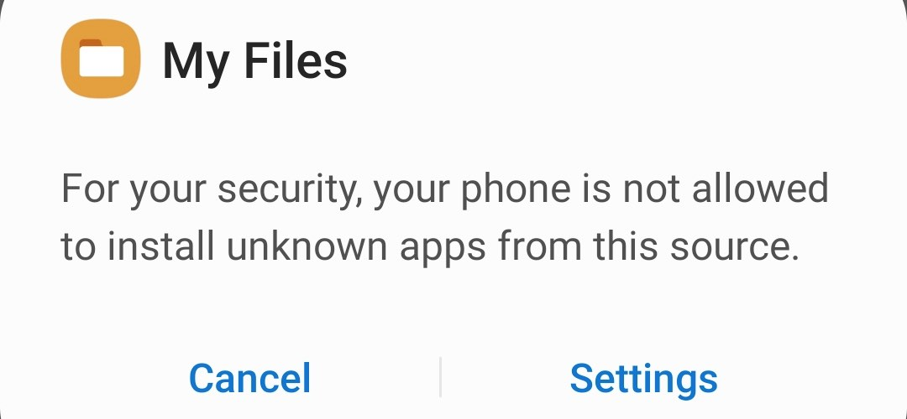 | 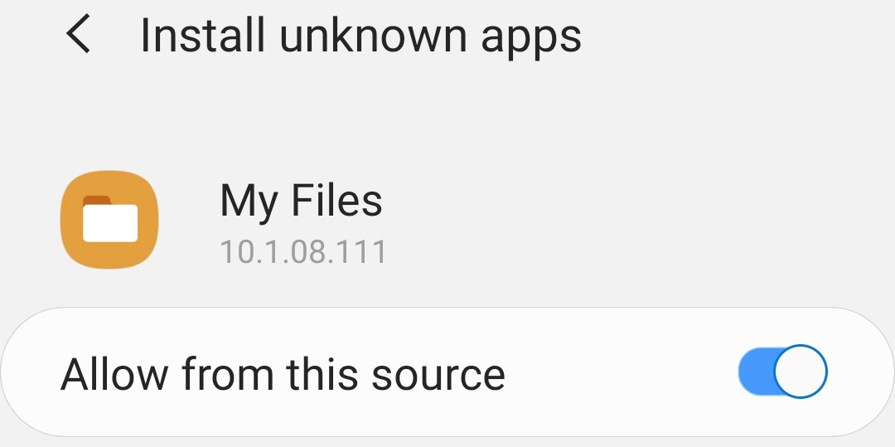 | 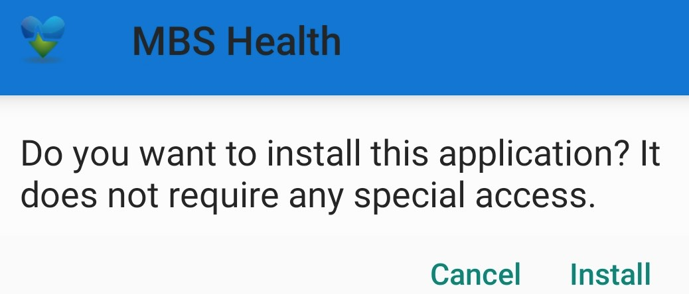 |
| Figure 5: Tap “Settings” | Figure 6: Tap the icon from grey to blue. | Figure 7: |
Once installed, you need to enable three permissions by tapping “allow” as outlined below:
| Figure 8: Enable Location | Figure 9: Enable Storage | Figure 10: Stop Battery Optimising |
Once permissions are enabled, the app will start ‘running’ and ‘scanning for a patch’ as outlined below, which sends persistency notifications to the smartphone:
| Figure 11: several notifications will be sent while using the application depending on if it is connected to a nearby VitalPatch. |
Add App to Home Screen
Once installed, swipe from the bottom left corner to open the application tray. Long press the “MBS Health” application and tap “Add to Home”.
Install Miscellaneous Applications
The following applications are installed to provide support to participants during the study.
IDEAFAST Support Materials
The support materials website contains documentation for all sensing devices with common questions that participants may have. This should be installed using the Microsoft Edge browser for an optimal experience.
Download and install Edge from the Google Play Store by opening “Google Play” and entering “Microsoft Edge” into the address bar and tapping “Install”.
| Figure 1: search for ‘microsoft edge’ |
Once installed, open the application by tapping “Open”. On the first time opening the application you will be presented with three questions:
- “Sign in to turn on sync” tap “Skip”
- “Share data about websites you visit” tap “Not now”
- “Share usage data for personalisation” tap “Not now”
- “Always browse with Microsoft Edge” tap “Yes”
- “Open with” tap “Edge” and “Always”
Once installed, open the Edge browser and enter https://docs.ideafast.eu into the address bar. You will then be prompted to enter a username and password (Figure 1). Enter your study site name in lowercase (e.g. kiel). The password is in the study vault or open a ticket at http://support.ideafast.eu/ and the password will be provided. This website is password protected to prevent any accidently disclosure of copyright material and indexing via search engines.
| Figure 1: a pop-up dialog will appear asking for a username and password to enter the documentation website. |
Once you have authenticated, please tap “Save” to store the username/password (Figure 2). This step is very important as the credentials are used when installing the application. This will prevent you or/and the participant re-entering the credentials multiple times.
| Figure 2: Tap Save to store the credentials for reuse later. |
Once on the website, wait a few moment and notification will appear on the bottom that reads “Add IDEA-FAST Support Docs to Home screen” (Figure 3). Tap on it and you will be asked to “Add to Home screen” (figure 4). Tap “Add”
| Figure 3: a popup to add the app to the home screen. | Figure 4: Tap “Add” to install the docs website on the mobile. |
Another popup will appear asking to confirm to install the application on the Home screen and how it will appear as an icon. Tap “Add” (Figure 5). This may take some time to install. Once installed, a notification will appear that reads: “Shortcut to IDEA-FAST Support Docs added to Home screen.”.
| Figure 5: Tap ‘Add’ to install the Support Docs app. |
After installation, the IDEA-FAST logo will appear as an application on the home screen as illustrated below:
| Figure 6: IDEAFAST logo |
Tap the icon and you will see the home page of the website and no navigation bar, i.e. no back/refresh buttons (Figure 7). The IDEA-FAST support documentation is now successfully installed.
| Figure 7: the support docs home screen. |
Note: swiping down will ‘refresh’ the application and update the support materials if any changes have been made. The login pop that appeared above may appear, but should have the credentials that were previously entered, allowing you to click ‘Okay’ to login.
Team Viewer (Quick Support)
Team Viewer Quick Support is a remote access software that can be used to provide remote support. To install Quick Support, open the “Play Store” application by swiping left from the home screen and clicking the app. Once open, enter “quick support” in the search bar and tap “Install” (Figure 1). Once it is finished installed tap “Open” (Figure 2).
| Figure 1: Search for “Quick Support” in the Google Play Store and install the above “QS” app. | Figure 2: once installed, tap “Open” |
Once the app is open, swipe right through the onboarding screens and tap “Done”. You then will be asked to activate the remote access permissions via “Samsung Knox”. Tap “ACTIVATE” (Figure 3) and you will be taken to another screen with terms and conditions. Tap “Next” to agree to these (Figure 4).
| Figure 1: Tap ‘Activate’ | Figure 2: Tap ‘Next’ | Figure 3: Permissions granted |
After this, another permissions popup will appear for “special app access” permissions. Tap “Settings” and you will be taken to a new screen. Tap the grey button to the right of “Allow permissions” and it will turn blue, then tap the “<” icon in the tap left hand corner to go back.
| Figure 4: Tap ‘Settings’ to enable permissions | Figure 5: Tap the button to enable permissions. |
All permissions will now be set. To remotely access this specific smartphone, you must write down the “ID” presented within the application (Figure 6) and mail it to Jay Rainey (Newcastle University).
| Figure 6: This is an example of an “ID” that appears when permissions are successfully enabled. |
Disable Sound
Sound is enabled by default and the volume is quite high. Several built-in mobile applications send notifications with sound that can be distracting for the participant. To disable sound, swipe down to open the context menu, and tap the sound icon twice: it will emit a vibrate on first press and the icon will change but remain blue (Figure 2), then will be disabled on the next press (Figure 3).
| Figure 1: Sound Enabled | Figure 2: Vibration Only | Figure 3: Sound/Vibration disabled |
Configuring Hotspot
Swipe download and tap and hold the Mobile Hotspot icon and the configure page will appear. A mobile hotspot cannot be enabled if no SIM card is inserted, however, you should preconfigure the network name that will broadcast to users, and the associated password. To do that, tap the “AndroidAP…” to and a popup will appear like Figure 3. Enter ideafast as the network name in all lower-case letters. Similarly, tap “Password” and enter “ideafast” and the Wi-Fi hotspot configuration is complete (Figure 4).
| Figure 3: the default network name will begin with ‘Android’ and should be changed to ‘ideafast’. | Figure 4: how the hotspot appears in the configuration page once complete. |
Enabling Hotspot
Before enabling a network please ensure that the Wi-Fi hotspot has been configured as described above, i.e. so it is named ideafast. If a SIM card has been provided you can enable a mobile hotspot. Unlock the phone by pressing the power button (located on the right side of the phone), swiping up, and entering 1034 for the PIN. Swipe down from the toolbar and you will see the Hotspot icon is gray as illustrated below. Tap it the hotspot will be enabled.
| Figure 1: hotspot is gray when disabled. | Figure 2: hotspot icon is blue when enabled. |
Organise Quick Panel
By default, there are many options in the quick panel that are not necessary for use and some that if enabled may impact installed sensing applications, such as battery saver mode. To hide these, swipe down to view the quick panel, and tap the vertical triple dot to view the options and tap “Button order” (Figure 1). You will then see all the active icons on the bottom. Drag all except those listed below to the top of the screen to hide them from view, i.e. WiFI, Flight Mode, Bluetooth, Mobil Data, Mobile Hotspot, Portrait and Location as illustrated below.
| Figure 1: Tap the menu and chose “button order” | Figure 2: Drag unused buttons to the top. |
Disabling HomeScreen Shortcuts
Two shortcuts to open the phone call and camera are enabled on the home screen, which should be removed. To do this, swipe left to open the apps and click “Settings”. Scroll down until you see “Lock screen”. Tap it and you will be taken to a new screen. Scroll to the bottom and you will see “Shortcuts” with a blue option as enabled (Figure 1). Tap the button to disable the home screen shortcuts: the button will turn from blue to grey as illustrated below:
| Figure 1: Shortcuts enabled | Figure 2: Shortcuts disabled |
Label Samsung Device
You will be provided with labels for each smartphone device. Please record the device’s serial number and the device ID on the label for entry into the inventory management system (visit: https://inventory.ideafast.eu). The label provided should be attached directly underneath the “SAMSUNG” text on the backside of the device.
Reusing Smartphone Across Participants
All data from the Samsung A40 must be deleted if the device is intended to be used across participants. This involves: removing any contacts from the phone book, deleting all SMS messages, and clearing the browser history.
Put into inventory management?
Yes. Unique device IDs for each Samsung smartphone have been pre-generated for you and can be found in the following spreadsheet for each study site:
You should then print and attach a physical label to each Samsung device. An overview of this process is described below:
- Record the unique device ID that is printed in the inventory management tool at https://inventory.ideafast.eu
- Find the device ID on the above spreadsheet.
- Record both IDs in the appropriate fields on the inventory management website (https://inventory.ideafast.eu) and record the current location of the device (e.g. Kiel).
- Update to “EN-ROUTE-TO-” once dispatched.
- Produce a label and a backup label for the device and attach one label to the device immediately.
- Enclose the backup label with the device when preparing for dispatching it.
Needs firmware update?
No. However, please following the instructions below to update the operating system.
Pairing with a companion application?
Yes. You must install and pair the Samsung smartphone with the Dreem and Biovotion devices if they are being used by a participant. Detailed installation instructions for each device are available outlined below and pairing instructions on their support documentation linked above.
Any account setup required?
Yes, a Google Account has been pre-created for each Samsung A40 with the email address ideafast.{DEVICE_ID}@gmail.com where DEVICE_ID will be the device’s ID that appears on the associated label. Account credentials for each Google Account are available through an encrypted vault. For further details please open a ticket on the idea fast support website: http://support.ideafast.eu/
Needs pairing with hub device?
Yes. There are seven mobile applications that must be installed on each Samsung smartphone. Installation instructions are provided for each application below. Once these are installed, place them on the home screen of the Samsung device. This will make it easier for participants to find each mobile application if needed as illustrated below:
| Figure 1: Application Tray on a clean install | Figure 2: Home screen layout |
When the phone is set up the home screen should look exactly as illustrated in Figure 2 Detailed installation instructions are provided in Section 3.
Any assembly required?
Yes. The pre-setup and configuration activities outlined below must be completed for each Samsung smartphone, including:
- Unboxing
- Google account creation or use existing one
- Updating operating system
- Insert SD & SIM card [if applicable]
- Install mobile applications
- Organise home screen
- Label device.
Package together with which other devices for which study centre?
Yes.
If handling an application: what needs doing before a study centre can use the app?
Do we need to get accounts from the application provider?
Yes. A unique Google account must be setup and the device configured for each device as outlined in section N.
Can the software be downloaded, or do we need to make it available?
Not Applicable
Does it need to be installed on the hub devices?
Not Applicable
Do we need to activate study accounts?
Yes. Specific study accounts for each installed mobile application must be used following guidance on the login procedure on the associated documentation, e.g. Dreem.
Device pre-setup and configuration
What sort of a device / application is this, what is it for and how does it work?
The Samsung A40 is a modern Android mobile smartphone to be used in the study to transfer and store data from hardware sensing devices used by participants. Some sensing devices, such as VitalPatch, have their own mobile applications that transfer data from the device to the phone using Bluetooth. Using the Samsung A40 instead of participants personal phones ensures compatibility, as well as a longer battery life with minimal disturbances to the participant.
What has already been done in pre-setup for the device or application?
The phones should already have been updated to the latest operating system version and all required applications installed and configured.
What will need to be done before a patient can start using this?
Any account setup required?
The phones you receive will already be pre-configured in Newcastle to be used with a study-specific account. Unless otherwise noted the PIN-code for unlocking the device should be 1034.
If you are receiving the mobiles directly to your study site, please following the instructions below to setup and install all required mobile applications and configuration of the smartphone.
If the phone has been used by another participant, please follow the reusing smartphone across participants instructions below that outline which data must be deleted.
Needs pairing with hub-device?
No. The phone itself acts as the “hub” device for sensing devices that have a mobile application.
Any configuration / assembly required?
Yes. Unique device IDs for each Samsung smartphone have been pre-generated for you and can be found in the following spreadsheet for each study site:
You should then print and attach a physical label to each Samsung device. An overview of this process is described below:
- Record the unique device ID that is printed in the inventory management tool at https://inventory.ideafast.eu
- Find the device ID on the above spreadsheet.
- Record both IDs in the appropriate fields on the inventory management website (https://inventory.ideafast.eu) and record the current location of the device (e.g. Kiel).
- Update to “EN-ROUTE-TO-” once dispatched.
- Produce a label and a backup label for the device and attach one label to the device immediately.
- Enclose the backup label with the device when preparing for dispatching it.
Device How To / setup for wear
The Samsung Galaxy A40 is a mobile smartphone for use in the study to store and transfer data from some of the wearable devices that you will be asked to use. The smartphone will be preconfigured to include all the necessary mobile applications for the duration of this study. A separate mobile phone is provided to assure compatibility, to avoid having to ask you to install a lot of apps on your private device and as using multiple Bluetooth devices have an impact on battery duration. Having a unique phone with the sole purpose of recording data will ensure it lasts a full day without impacting your everyday use of your own mobile phone. Additionally, in case you do not want to install the StressMonitor and CamCog apps on your privately owned smartphone, or if you do not own a device that is compatible with these devices (such as not owning an Android device) then you can use these apps on the study phone.
What sort of a device / application is this, what is it for and how does it work?
The Samsung A40 is an Android mobile smartphone that will be connected to your local WiFi (if available) or preconfigured with SIM card for mobile network connectivity to upload data automatically when you use specific sensing devices. Its purpose is to connect and transfer data between the sensing devices that you wear and the smartphone where they have an associated mobile application.
Connecting to your home WiFi
Once you arrive home the provided Samsung smartphone should be connected to your home WiFi. Please obtain the WiFi network name and password before proceeding. If you have not changed these on your home router, then this will be the “SSID” and “Password” written on the router’s label.
Step 1: Unlock phone
Press the button on the right side of the device to illuminate the screen and swipe up. The “Enter Pin” screen will appear as illustrated below. Enter 1034.
Step 2: View WiFi
Swipe down from the top of the screen (where the front camera is located) and you will see a list of icons. If the Wi-Fi button is blue, press and hold the button and the available networks screen will appear (Figure 1). If the Wi-Fi button is grey that means it is turned off. To turn it on tap the icon.
 |
| Figure 1: Available networks Wi-Fi |
Step 3: Connect
Tap the network that has your home Wi-Fi name (in this example it is EJ5) and then enter the password and tap “Connect” (Figure 3). You will then be taken to a new screen where your Wi-Fi is shown as active (Figure 3).
 |
 |
| Figure 2: enter your WiFi’s password | Figure 3: the ‘current network’ should be the one you entered. |
What will I need to do before I can start using this?
Any account setup required?
No. Your Samsung smartphone will be associated and pre-configured with a study-specific account for the phone itself and for each sensing application that will be used. Should the phone require a PIN to unlock this should be set to 1034.
Needs pairing with other devices?
Yes. Some of the wearable devices you will be asked to use during the study will need to be paired with the study phone. You will find detailed guidance on this in the materials about each wearable. The provided Samsung smartphone should be added to your home WiFi as documented above.
Any configuration / assembly required?
No. There will be no configuration required to use the Samsung A40 device. You should receive it fully charged, but we kindly ask you to make sure that it always remains charged and turned on during the study. The phone should come with all required applications pre-installed. You will also receive a USB-C charger that can be used to charge the phone. Due to organisational reasons for this study, charging equipment may come with either EU or UK mains plug connectors. If needed, an according adapter (converter) plug will be provided to you by at the clinical site.
How can I get help with using this?
If you have any other questions or concerns, please contact your local study centre:
| Newcastle, United Kingdom | Rotterdam, Netherlands | Kiel, Germany | Muenster, Germany |
| Person Name Centre Name Location |
Person Name Centre Name Location |
Person Name Centre Name Location |
Person Name Centre Name Location |
Troubleshooting/FAQ
The device / app seems to have stopped working: what should I do?
Battery?
We kindly ask you to keep the battery in the smartphone charged and the phone turned on at all times. This can be achieved by charging the phone each night. As this is a new mobile smartphone its battery should last all day. Should you have any specific issues relating to the battery being drained quickly, please hold the power button on the right-hand side of the phone for 3 seconds until a popup menu appears. Please select the “Restart” option. If issues with battery drain persist after restarting the phone, then please get in touch with your study contact.
Connectivity issues?
The Samsung smartphone is provided so that it can connect and transfer data from specific sensing devices over Bluetooth and then use a Wi-Fi connection (when available) to upload the transferred data to the cloud. Some of the sensing devices have their own unique mobile application, which will be listed on your home screen. If you are having specific connectivity issues with those devices, please refer to their documentation (VitalPatch, Dreem, and BioVotion). If the problem continues, please contact your clinician. The smartphone should be connected to your home Wi-Fi as documented above. If no Internet network connect is available through your home network, then the pre-paid SIM card will be used. If your network connectivity problems continue, please contact your clinician.
Restarting Bluetooth
Bluetooth will be enabled when the above sensing applications are installed. However, this can be turned off at any time (such as to reset the connection) by swiping down and tapping the Bluetooth icon. If the Bluetooth icon has a blue background then it is connected, and if it has a grey background then it is disabled. To restart Bluetooth, tap the associated icon until it turns from blue to grey, which will turn the Bluetooth off. Wait 10 seconds and tap it again to turn it back on.
 |
|
| Figure 1: Bluetooth is blue when enabled. | Figure 2: Bluetooth is grey when disabled. |
Restarting Wi-Fi
Unlock the phone by pressing the power button (located on the right side of the phone), swiping up, and entering 1034 for the PIN. Swipe down from the toolbar and Wi-Fi icon will be listed in blue as enabled (Figure 1). Tap the icon and it will turn grey, which turns the Wi-Fi off (Figure 2). Wait 20 seconds and tap it again to turn it on and it will automatically connect to the previous network.
| Figure 1: Wi-Fi is blue when enabled. | Figure 2: Wi-Fi is grey when disabled. |
Enabling/Disabling Flight Mode
Flight mode turns off all network connections including Wi-Fi and Bluetooth, which can be useful to reset all connections with the phone without restarting the device. Swipe down from the toolbar and flight mode icon will be listed in grey and appears as a plane:
| Figure 1: Wi-Fi enabled and Flight Mode is off. | Figure 2: Flight Mode is blue when enabled. |
Grey indicates that flight mode is disabled. Tap the flight mode icon and it will turn blue to indicate it is activated and the Wi-Fi and Bluetooth connections on the menu bar will turn grey. Wait 20 seconds and tap the flight mode icon again to disable it, which will reactivate the phones Bluetooth and Wi-Fi.
Restarting Phone
Unlock the phone by pressing the power button (located on the right side of the phone), swiping up, and entering 1034 for the PIN. Press and hold the power button until the following three options will appears and tap “Restart” twice and the phone will restart:
 |
|
| Figure 1: three options that appear. | Figure 2: Tap Restart twice to restart the phone. |
Using the device / app is uncomfortable to me: what can I do?
Adjust wear style?
We kindly always ask you to keep the phone nearby while participating in the study. However, it can be placed in a purse, pocket, backpack or other pouch.
Adjust usage pattern?
We kindly ask you to keep the study phone with you or nearby at all times. At night, a location in the same room is fine, such as a bedside table. If you feel the device is dirty you can clean it with wet wipes or alcohol rub.
Device return
What do I do when a period of device use is over?
Please store the device in a safe place and make sure it stays clean and dry. Please contact the person that provided you with it to arrange further steps.
Before the device is returned or disposed of: does any data need to be transferred?
No. Data that has been successfully uploaded to the cloud are stored safely. Any data that remains on your Samsung smartphone that has not been uploaded will be manually uploaded once it is returned. Therefore, it is very important that you do not uninstall any applications. All recorded data from the sensor devices will be cleared from the phone before it is handed out to any further study participants.
Do I need to return the device somewhere?
Yes. Please get in touch with your local study centre contact if you are not yet aware of the process for returning your study phone. You will have to return it either in person or by post – subject to further individual arrangement.
Returned device processing and cleaning / an application use period for a participant has ended
Trigger Data Transfer Protocols?
Each Samsung smartphone will host mobile applications including: VitalPatch, Dreem, Biovotion, VTT Stress Monitor and CamCog. It is critical that you verify each of these applications does not have any data and if they do, to follow the data transfer protocol in the associated documentation (linked above). Please ensure that the Samsung device is connected to Wi-Fi. Some of these applications will attempt to automatically upload data once an internet connected is created.
Where should the device be returned?
Prior to returning any device, please ensure all data has been transferred and successfully uploaded to the idea-fast data portal: https://data.ideafast.eu
Device recycling and provisioning
How will the devices and applications be supplied to the study site?
They will be mailed directly to the study site.
What to do with devices once the study site is entirely done with them?
Please ensure any data has been transferred from the smartphone and uploaded successfully. You should then clean the device using alcohol wipes if it is dirty and put it in the original box. Please then contact Jan Smeddinck from Newcastle University to arrange shipping of the Samsung smartphones from your study site to Newcastle. Once shipping is confirmed, please update the inventory tracking website (http://inventory.ideafast.eu/) to note that these have been dispatched. All smartphones will be ‘reset’ once they arrive in Newcastle and prepared again for future studies.